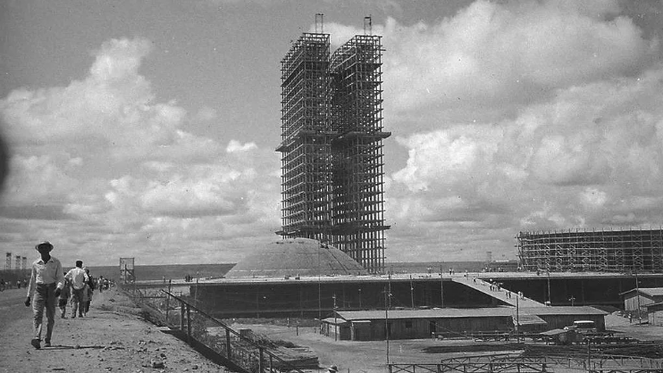

Em 1960, inauguração da cidade marcou a transferência do poder político para o interior do país em clima de esperança e progresso.
João Scavacin, Gabriela Boechat e Ester Cauany, da CNN, de São Paulo e Brasília.
21/04/25 às 04:00 | Atualizado 21/04/25 às 18:13

Inaugurada em 1960 pelo então presidente Juscelino Kubitscheck, Brasília completa 65 anos nesta segunda-feira (21). A capital foi construída em tempo recorde e tinha o objetivo de promover integração nacional e acelerar o desenvolvimento do interior.
A cerimônia que marcaria a transferência definitiva da sede dos Três Poderes para o Planalto Central, antes alocada no Rio de Janeiro, começou às 8h da manhã.
Leia Mais
https://www.cnnbrasil.com.br/politica/inaugurada-por-jk-brasilia-celebra-65-anos-como-simbolo-nacional/